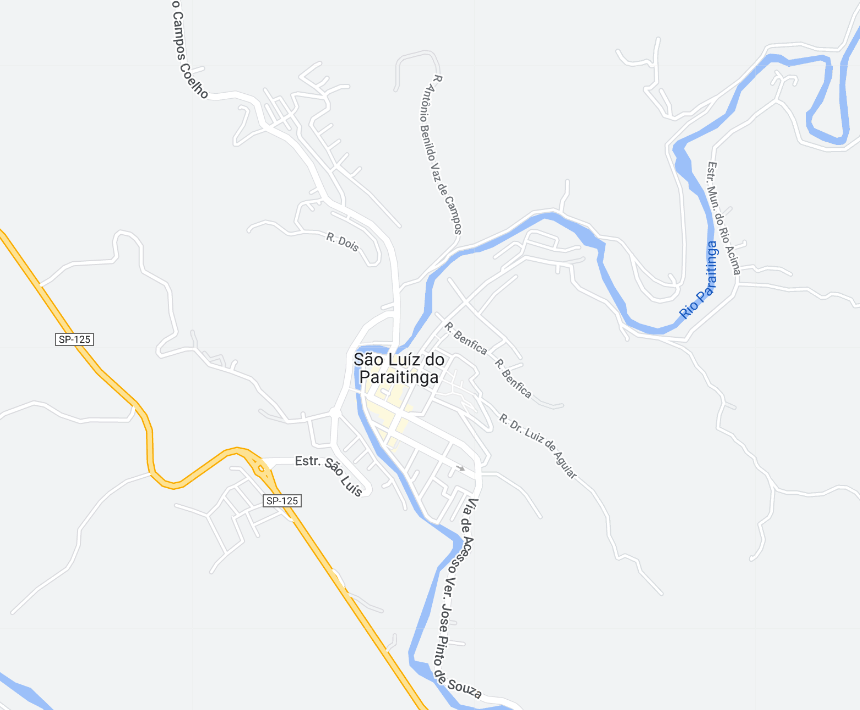

São Luiz do Paraitinga - Geodex

Município de São Luiz do Paraitinga
-
Populacão: 10.693 pessoas
-
Área: 617,315km²
-
Fundação: 2 de Maio de 1769
-
Distância da Capital: 186km
A cidade de São Luiz do Paraitinga foi fundada em 2 de maio de 1769, inicialmente com o nome de São Luiz e Santo Antonio do Paraitinga. A petição para fundar a nova povoação foi deferida pelo governador em 1769, e o sargento mor Manoel Antonio de Carvalho foi nomeado fundador e governador. A vila foi elevada à categoria de cidade em 30 de abril de 1857, e posteriormente recebeu a denominação de "Imperial Cidade de São Luiz do Paraitinga" em 11 de junho de 1873. A cidade se tornou uma estância turística em 5 de julho de 2002. O nome Paraitinga vem do rio que passava pela região e servia como rota para o transporte de café e ouro mineiro durante o período dos Bandeirantes.